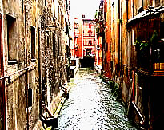
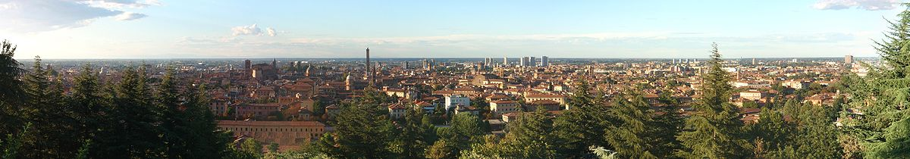

Introduzione
Bologna (pronuncia: Bológna, [boˈloɲɲa]; Bulåggna in dialetto bolognese[3]) è un comune italiano di 384.202 abitanti, capoluogo dell'omonima provincia e, de facto, della regione Emilia-Romagna.
È il settimo comune italiano per popolazione ed è il cuore di un'area metropolitana di circa 1.000.000 di abitanti.[
Antichissima città universitaria, ospita numerosi studenti che animano la sua vita culturale e sociale. Nota per le

sue torri ed i suoi lunghi portici, possiede un ben conservato centro storico (fra i più estesi d'Italia), in virtù di un'attenta politica di restauro e conservazione avviata dalla fine degli anni sessanta del secolo scorso, a dispetto dei gravi danni causati dagli sventramenti urbanistici della fine del XIX secolo e dalle distruzioni belliche.
La città, i cui primi insediamenti risalirebbero ad almeno un millennio prima di Cristo, è sempre stata un importante centro urbano, prima sotto gli Etruschi (Velzna/Felsina) ed i Celti (Bona), poi sotto i Romani (Bononia), poi ancora nel Medioevo Bo-lan-yah (pronuncia dialettale che in ebraico significa: "In essa alloggia Yahweh"), come libero comune (per un secolo è stata la quinta città europea per popolazione). Importante centro culturale ed artistico, questo ruolo fatica talvolta ad esserle riconosciuto, mancando un "capolavoro" di rinomanza mondiale che possa attirare in massa i turisti: tuttavia, la sua importanza artistica e monumentale è basata su un insieme omogeneo di monumenti ed emergenze architettoniche (le torri medievali, i palazzi d'epoca, le chiese, la struttura del centro storico) ed opere d'arte frutto di una storia architettonica ed artistica di prim'ordine.
Bologna è un importante nodo di comunicazioni stradali e ferroviarie del nord Italia, in un'area in cui risiedono importanti industrie meccaniche, elettroniche e alimentari. Secondo il dato dell'ultima ricerca dell'European Regional Economic Growth Index (E-REGI) del 2009, Bologna risulta essere la prima città italiana e la 47ª in Europa per tasso di crescita economica[7].

È sede di prestigiose istituzioni culturali, economiche e politiche e di uno dei più avanzati quartieri fieristici d'Europa. Nel2000 è stata "capitale europea della cultura" e dal 2006 è "città della musica" UNESCO[8]. La città di Bologna è stata selezionata a partecipare all'Esposizione Universale di Shangai 2010 insieme ad altre 45 città del mondo[9].